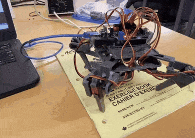

Spooder

A four-legged, 3D-printed walking robot inspired in equal parts by Iron Man and the Amazing Spider-Man. Eight SG90 servos run through a motor shield, Bluetooth-controlled and powered by a 7.4V LiPo, all kept under 200 grams. Four months of work, and 3rd place at my school's first Annual Robotics Olympiad.
0. activating my spidey senses
Working with circuits is like me having a bag of chips, it's just enticing for no reason. And I’ll keep cranking out a project every now and then, just to lower my academic cortisol. This was highly motivated by my union between an Iron Man movie and the Amazing Spider Man. Ofcourse I couldn’t possibly make Jarvis (although that is on my bucket list, stay tuned!), but the spider has always fascinated me (in a fearful way, respectfully). The way it can navigate through walls, and even on your skin without you noticing (always keep an eye out in the washroom unless you want a midnight nightmare). I just knew I had to do some research and come up with my own version of one of God’s most exquisite.
1. dates with my laptop (quite nerdy)
I made sure to do some research and what I realized was the spider had a really compact form factor that allowed it to navigate rough terrain and move rapidly, avoiding predators or on the contrary, catch prey stealthily. So with this in mind, I created a 3D model on CAD for my spider bot with 4 legs (slightly handicapped but that’s fine) and got it 3D printed (after structural stability tests using simulation software ofcourse).
2. gathering hardware
The robot was small in size, and hence would require small parts. I settled for 8 sg90 servos, 4 for rotation, and another 4 for each leg (almost like an ankle movement replication). Also, 8 servo power distribution is way too much for the arduino, which is why I had to use a motor shield to distribute power properly to all of the motors without overworking its brain. It would also have bluetooth control, so definitely a bluetooth control module. Finally, it was powered using a 7.4V LiPo battery, keeping its weight under 200 grams.
3. coding
I relied a lot on example code, and mixed and matched sections accordingly to create the instruction manual for the bot. It took me 4 months in total to wrap up its creation and once it was done, it could move!
4. amazing spiderman (or I should say bot)
It could carry out a wide range of functions, from sitting down, to stand up, moving, strafing and coming to a stop. I even added boots to my spider! (it was necessary since the 3D printed plastic had poor grip on surfaces, hence moving was initially a struggle). Once everything wrapped up, our school organized its first-ever Annual Robotics Olympiad and spooder weaved a web around many people (unfortunately not all), securing 3rd place.
